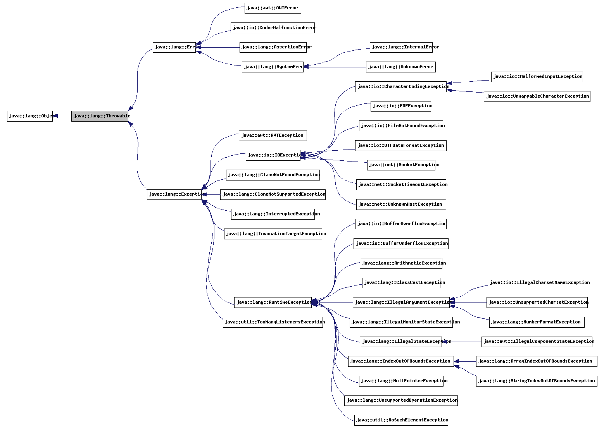
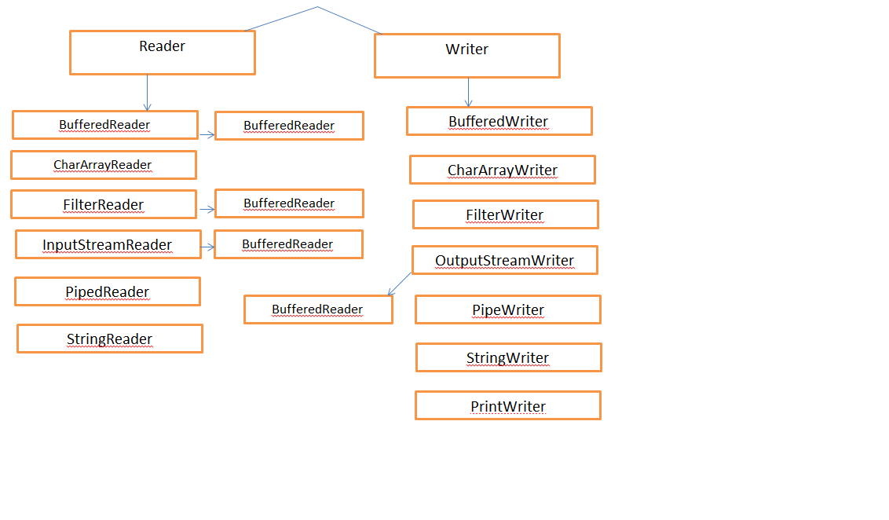

1. What is Java?
Java is object oriented Higher level programming language.
2. History of Java?
Sun was wanted to see what will be next in computing?
So they assembeled one team named as Green team
Motivaion:
Inttial they want to make network of heterogeneous consumer deveces.Theat deveces will be small reliable distributed realtime embedded system.So they decided to make a prototype.
Goals:
Consume less memory,platform independent,multi threading,secure.
INITIATLITY THEY THINK TO USE C++ BUT IT HAS SOME LIMITATION AS WE ALL KNOWS
So new language invented ie. Oak(1991) by James Arthur Goslin in 1995 it renamed as Java.
5 sept. 1992 the green team came with the device ie. *7 (StarSeven) handheld touch screen device.
Then they targeted Cable TV it doesnt work
Then they come toward network, internet.
Before java comes into existance internate moves only satic.
so sun world inavonce browser HotJava HTML+program(applet)=dynamic
its java installed browser and applet are platform independent.
Netscape navigator ship with Java.
Java was conceived by James Gosling, Patrick Naughton, Chris Warth, Ed Frank, and Mike Sheridan.
First Version relesed in 1996
3. The versions that has been released.?
| Version | Released on | No. of Classe | No. of Packages |
|---|---|---|---|
| JDK Alpha and Beta | (1995) | ||
| JDK 1.0 | (23rd Jan, 1996) | 212 | 08 |
| JDK 1.1 | (19th Feb, 1997) | 503 | 23 |
| J2SE 1.2 | (8th Dec, 1998) | 1520 | 59 |
| J2SE 1.3 | (8th May, 2000) | ||
| J2SE 1.4 | (6th Feb, 2002) | ||
| J2SE 5.0 | (30th Sep, 2004) | 3562 | 166 |
| Java SE 6 | (11th Dec, 2006) | 3792 | 203 |
| Java SE 7 | (28th July, 2011) | 4024 | 209 |
| Java SE 8 | (18th March, 2014) |
4. Features (Buzzwords) of java.(SSHRIPAOMDD )
Simple5. Java operators (Eight Types)
| Assignment Operators | = |
| Arithmetic Operators | - + * / % ++ -- |
| Relational Operators | > < >= <= == != |
| Assignment Operators | && || & | ! ^ |
| Logical Operators | & | ^ >> >>> |
| Bit wise Operator | = |
| Compound Assignment Operators | += -= *= /= %= <<= >>= >>>= |
| Conditional Operator | ?: |
| Operators | Precedence |
|---|---|
| postfix | expr++ expr-- |
| unary | ++expr --expr +expr -expr ~ ! |
| multiplicative | * / % |
| additive | + - |
| shift | << >> >>> |
| relational | < > <= >= instanceof |
| equality | == != |
| bitwise AND | & |
| bitwise exclusive OR | ^ |
| bitwise inclusive OR | | |
| logical AND | && |
| logical OR | || |
| ternary | ? : |
| assignment | = += -= *= /= %= &= ^= |= <<= >>= >>>= |
6. Data Types in java of java
Primitive data types are defined by the programming language. ex.int,float,char.etc.| Type | Size in Bytes | Range | Default Value (For Field) |
|---|---|---|---|
| byte | 1 byte | -128 to 127 | 0 |
| short | 2 bytes | -32,768 to 32,767 | 0 |
| int | 4 bytes | -2,147,483,648 to 2,147,483, 647 | 0 |
| long | 8 bytes | -9,223,372,036,854,775,808 to 9,223,372,036,854,775,807 |
0 |
| float | 4 bytes | approximately ±3.40282347E+38F
(6-7 significant decimal digits) Java implements IEEE 754 standard |
0.0f |
| double | 8 bytes | approximately ±1.79769313486231570E+308 (15 significant decimal digits) |
0.0d |
| char | 2 byte | 0 to 65,536 (unsigned) | '\u0000 |
| boolean | not precisely defined* | true or false | false |
7. Acees Modifiers
| Specifier | Acees in Sub Class | Acees in other class | ||
| same package | other package | same package | other package | |
| private | No | No | No | No |
| public | Yes | Yes | Yes | Yes |
| protected | Yes | Yes | Yes | No |
| default | Yes | No | Yes | No |
8. Reserve Keywords
Here is a list of keywords in the Java programming language. You cannot use any of the following as identifiers in your programs. The keywords const and goto are reserved, even though they are not currently used. true, false, and null might seem like keywords, but they are actually literals; you cannot use them as identifiers in your programs.
| Modifiers | Flow Control | Data Types | Exception | Class | Return Type | Reserved Literals | Unused | Object related | (1.5) |
|---|---|---|---|---|---|---|---|---|---|
| public | if | byete | try | class | void | true | goto | new | enum |
| private | else | short | catch | interface | false | count | instanceof | ||
| protected | switch | int | finally | extends | null | super | |||
| static | case | long | throw | implements | this | ||||
| final | default | float | throws | package | |||||
| abstract | while | double | assert (1.4) | import | |||||
| synchronized | do | boolean | |||||||
| native | break | char | |||||||
| strictfp | continue | ||||||||
| transient | return | ||||||||
| valantile | for |
9. Compilation
Compilation :10. Four pillars of oops
1. Abstraction: Abstraction is a process of exposing essential feature of an entity while hiding other irrelevant detail. abstraction reduces code complexity and at the same time it makes your aesthetically pleasant. Abstraction in java is achieved by using interface and abstract class. Interface give 100% abstraction and abstract class give 0-100% abstraction.
2.Encapsulation: Encapsulation is wrappingup of data and code. Like clas is encapsulated.Encapsulation is when you hide your modules internal data and all other implementation details/mechanism from other modules. it is also a way of restricting access to certain properties or component. pojo class is the best example of encapsulation.
3.Plymorlphism: Poly is the greek word poly means multiple and morphism means forms. Pollymorphism we collectivelly called as multiple forms. In other words i.e one entity which acts different role at different instances we can called as polymorphism.
There are two types:
i)Method overloading ii) operator overloading iii) constructor overloading
2) Method overriding:It is also known as late binding, Run Time Polymorphism or dynamic polymorphism.
| Methos Overloading /Early Binding/Compile time/Static Binding | Methos Overridding /Late Binding/Run time/Dynamic binding |
|---|---|
| Method which has the same name but different list of argument is called as method overloading.Actually method name, Signature must be same but argument must be different at least order. No restriction for return type. | The parent class have the method But if the child clas is not satisfied with that implimantation then child will redefine the method and that "Redefining the parent class method called method overridding." Method name, argument type and signature, return type must be same. |
| Method Overloading, Constructure Overloading, and Operator Overloading | Abstract class, Interface |
| Private, static and final methods show static binding. Because, they can not be overridden. | Other than private, static and final methods show dynamic binding. Because, they can be overridden. |
| Actual object is not used for binding. | Actual object is used for binding. |
4.Inheritance: Inheritance is the process of extending the properties of super class or parent class by the sub class or child class is called as inheritance.
There are basically two types of inheritance in java 1) Single 2) MUltiple
Note: Java does not support Multiple Inheritance bcoz it creates confussion to access the properties of parent class.Instead java supports Interface in java.
| Single level Inheritance | Multilevel Inheritance |
|---|---|
| When a class extends another one class only then we call it a single inheritance. | “Multiple Inheritance” refers to the concept of one class extending (Or inherits) more than one base class. |
11. Setting up the path for windows machine.(Permenant)
Assuming you have installed Java in c:\java\jdk directory:12. Boxing and Unboxing.
Wrapper class in java proviede the mechanism to convert primitie into onject and object into promitive. The process of converting Primitive into Object is called as Autoboxing and Object into Primitive is called Unboxing.
13. Why java is WORA.
WORA means Write Once Run Anywhere:Java is Compiled and Interpreted language.Once it Compile it creates a bytecode ie .class file. Various platform might vary in fonfiguration, those they would all understand the same set of Bytecode, thereby making the java program platform independent java achives WORA.
14. What is JDK, JRE, JVM
JDK is an acronym for Java Development Kit.It physically exists.It contains JRE + development tools.15. What are the differences between a compiler, an interpreter and an assembler?
Compiler converts source code to some kind of intermediate form. For static language, a compiler usually converts the source code to assembly, which usually did not get stored to disk, then the assembler is invoked to convert the assembly to binary code, which is usually stored as object file(.o or .obj suffix usually), then linker is invoked to link object file(s) to binary executable. Also it is common to refer to this whole process of compiling, assembling, linking as compiling. So you may call gcc a compiler, but it actually invokes cc1 which is the compiler to compile, as which is the assembler to assemble, ld which is the linker to link.
For language which has a intermediate so called bytecode form, the source code is first converted to byte code, this process can be called compiling, javac serves as an example. Bytecode cannot be run on host machines, it needs a program, which is actually the process from the viewpoint of OS, to interpret the bytecode to the host machine, this program is called a interpreter, think of java. Some language, like python, do the compiling and interpreting work with a single command
16. What is Class Loader and thier types
The Java Classloader is a part of the Java Runtime Environment that dynamically loads Java classes into the Java Virtual Machine. Usually classes are only loaded on demand. The Java run time system does not need to know about files and file systems because of classloaders.
1.Bootstrap Class Loader
2. Extension Class Loader
3. Application Class Loader
17. What is JIT Compiler
In the Java programming language and environment, a just-in-time (JIT) compiler is a program that turns Java bytecode (a program that contains instructions that must be interpreted) into instructions that can be sent directly to the processor.18. Which are memory area in JVM
Basically there are five types of memory area in JVM.
1.Method Area: This is the class area the binary data of class resides here. String constant pool area resides here. Its default size is 64 MB till the JDK 1.7 from JDK 1.8 its increases to unlimited size.This area is loaded once per JVM.
2. Heap Area: Its area for objects, Class class object and instance variable data, Arrays are allocated in this area.This area is loaded once per JVM.
3. Stack Area: It keep track for current executing method and its data. Its created one per thread.
4. Program Counter Register area: Which instruction will execute the next PC register keep track of it.
5. Native Method Area: This is the area for the such library files which are not incoded in java rather it in other native languages like C or C++.
19. Explain main method
This is necessary since main() is called by the Java interpreter before any objects are made. The keyword void simply tells the compiler that main() does not return a value. The true entry point to any application is a static method.20. Explain System.out.println();
System is the class which is in java.lang package and which is only by default accecible package.21. Rules for declaring the variables.
1. A variable name is any combination of any 31 alphabets, digits or underscore. Maximum 247 characters are allowded.22. Difference between path and classpath in Java
Path variable is set for provide path for all java tools like java, javac, javap, javah, jar, appletviewer. In Java for run any program we use java tool and for compile java code use javac tool. These all tools are available in bin folder so we set path upto bin folder. classpath classpath variable is set for provide path of all java classes which is used in our application. All classes are available in lib/rt.jar so we set classpath upto lib/rt.jar.
23. Abstraction Vs Interface.
| Abstraction | Interface |
|---|---|
| If we are talking about implementation but not completely(partial implementation) then go for.... ex: Generic Servlet and HTTP Servlet | If we dont know anything about implementation just we have requirment specificaton(100% abstract) then go foe interface ex: servlet interface | We can declare abstract as well as concrete method also Need not to public static final | Its pure abstract class. Every method is always public and abstract by default. Every variable is public static final. We cannot create object so synchronization not applicable. for the interface we should initialize the variable at the time of declaration. Instance block static block concept not applicable because we are not creating object in interface. constructor concept is not applicable because every variable is static and final and already initialized so no need of constructor. |
24. What id marker Interface and Annnotation
Marker interface means blank interface in other words the interface which doesnt contain any method. implementing it is meant to imply some special treatment of the implementing class.e.g. Serializable, Clonnable and Remote25. What is the difference between the data types of java and C++
1. Data types in java are strictly typedef.26. Call Byreference Vs Call Byvalue
There is only call by value in java, not call by reference. If we call a method passing a value, it is known as call by value. The changes being done in the called method, is not affected in the calling method.27. final keyword in java?
Variable: It will be like a constanat.28. Exception Diagram
29. Deep Cloning Vs Shalow Clonning
Object Cloning in Java. The object cloning is a way to create exact copy of an object.30. Object Lock Vs Class Lock
Object level locking is mechanism when you want to synchronize a non-static method or non-static code block such that only one thread will be able to execute the code block on given instance of the class.31. Fully checked Vs Partically Checked.
Checked exception said to be fully checked if and only if all its child classes are checked IOException, InterpretedException, RuntimeException, ServletException.32. Function Vs Method
A function is a piece of code that is called by name. It can be passed data to operate on (ie. the parameters) and can optionally return data (the return value). All data that is passed to a function is explicitly passed. A method is a piece of code that is called by name that is associated with an object. In most respects it is identical to a function except for two key differences. It is implicitly passed the object on which it was called. It is able to operate on data that is contained within the class (remembering that an object is an instance of a class - the class is the definition, the object is an instance of that data).33. Composition IS-A Vs Aggregation HAS-A
Association34. Static keyword
Variable35. Error Vs Exception
| Error | Exception |
|---|---|
| Errors are non-recoverable.Mostly it caluse because of lack of system problems | Most of the time exeption caused by our program and this ae recoverable. ex. FileNotFoundExecption |
36. Cheked exception Vs Unchecked exception
| Checked Exception | Unchecked Exception |
|---|---|
| The exception whic are checked by compiler for the smooth execution of program at runtime these exception ae checked exception. | The exceptions which are not checked by the compiler whether programmer handleling or not such exceptons are Un-checked exception. |
| We handle such exception either by try catch or by throws. | ex. ArithmeticException |
| Except RuntimeException, Error and its child classes are checked. | RuntimeException, Error and its child classes are un-checked. |
37. Reader Vs Writer Hirarchy
38. Mutable Vs Immutable
39. What is Serialization, Deserialization and Externalization?
| Serialization | Deserialization | Externalization |
|---|---|---|
| The serialization is the process of writing the state of an object to a file is called as serialization. | It is the process of reading the state of an object from a file is called deserialization. | The Externalizable interface provides the facility of writing the state of an object into a byte stream in compress format. It is not a marker interface. |
| In other words is the process of converting the objcet from java supported from to either file supported form or network supported form. | In other words it is the process of converting an object from either file or network suported from into java supported form. | Externalizable interface you have to implement writeExternal() and readExternal() methods which contains the logic to store and retrieve data and with changes you might need to do changes in the code logic. |
| It uses fileoutputstream and objectoutputstream. | It use FileInputStream and ObjectInputStream | |
| It is mainly used in Hibernate, RMI, JPA, EJB, JMS technologies.java.io.Serializable interface by default. |
40. Thread? Its Priorities?
-Remember that all the threads carry normal priority when a priority is not specified.41. What is the difference between Servlet and JSP
| Servlet | JSP |
|---|---|
| Servlets are Java programs that are already compiled which also creates dynamic web content.(JSP=Java+html) | JSP is a webpage scripting language that can generate dynamic content.(Servlet=html+Java) |
| Servlet are nothing but the server side java class. | JSP technology as the Servlet application program interface (API).Java Server Page (JSP) is a technology for controlling the content or appearance of Web pages through the use of servlets, small programs that are specified in the Web page and run on the Web server to modify the Web page before it is sent to the user who requested it. |
| In MVC, Servlet act as a Controller. | In MVC, jsp act as a view. |
| Servlet runs faster compared to JSP. | JSP run slower compared to Servlet as it takes compilation time to convert into Java Servlets. |
| There is no such custom tag facility in servlets. | The advantage of JSP programming over servlets is that we can build custom tags which can directly call Java beans.we can use a lot of tags such as action tags, jstl, custom tags etc. |
| Servlets, the Programmer compiles manually a Servlet file and deploys a .class file in server. | First time when JSP is called it is compiled to a Servlet. Subsequent calls to the same JSP will call the same compiled servlet (instead of converting the JSP to servlet), Ofcourse, the JSP code would have not modified. This increases performance. |
| The servlet code needs to be updated and recompiled if we have to change the look and feel of the application. | If JSP page is modified, we don't need to recompile and redeploy the project.So development is faster than Servlet. |
42. What is Process vs thread?
43. notify vs notifyall
| notify() | notifyAll() |
|---|---|
| Wakes up a single thread that is waiting on this object's monitor. If any threads are waiting on this object, one of them is chosen to be awakened. The choice is random and occurs at the discretion of the implementation. A thread waits on an object's monitor by calling one of the wait methods. | Wakes up all threads that are waiting on this object's monitor. A thread waits on an object's monitor by calling one of the wait methods. |
| When we called notify() - Only one of the two waiting thread was notified (i.e. Thread-1 and Thread-2 were waiting and only Thread-1 was notified) | When we called notifyall() - Both of two waiting threads were notified (i.e. Thread-1 and Thread-2 were waiting and both were notified) |
44. What is Multithreading?
Multithreading refers to two or more tasks executing concurrently within a single program.45. What is super, this, strictfp, instanceOf, accertion,transient?
transient: If you don't want to serialize any data member of a class, you can mark it as transient.46. what is yeild, join and sleep
| yield | join | sleep |
|---|---|---|
| yeild method uses to pause current executing thread to give the chance for waiting thread of same priority if there is no waiting thread or all waiting thread have low priority then same thread can countinue its execution. | if a thread wants to wait until compliting some other thread then we should go for join method. | If a thread dont want to perform any operation for a perticular amount of time then we should go for sleep() |
| if the multiple threads are waiting with same priority thern we can expet exact. It depends on thread schedular. | for example if a thread t1 wants to wait until compliting t2 then t1 has to call t2.join(); | |
| If thread is yield when it get chance again that also we can say exactlly. | If t1 executes t2.join(); then immediatelly t1 will be entered into waiting state until t2 complits.Once t2 complits then t1 continue its execution. |
47. What is the difference between Final, Finally and Finalize?
| final | finally | finalize |
|---|---|---|
| final keyword is a modifier, which means different things if used among class, variable and methods. | Similarly finally is used in exception handling. | while finalizer is a method, which gets called when garbage collector collects objects. |
48. What is the difference between String, StringBuffer and StringBuilder
| String | StringBuffer | StringBuilder |
|---|---|---|
| String is a immutable. | Stringbuffer is a mutable. | String builder also mutable. |
| it is thread safe | StringBuffer is synchronized i.e. thread safe. | StringBuilder is non-synchronized i.e. not thread safe. |
| String is slow and consumes more memory when you concat too many strings because every time it creates new instance. | strings because every time it creates new instance. StringBuffer is fast and consumes less memory when you cancat strings. | |
| String class overrides the equals() method of Object class. So you can compare the contents of two strings by equals() method. | StringBuffer class doesn't override the equals() method of Object class. | StringBuilder is more efficient than StringBuffer. |
49. What is Inner classes Nested classes and Annonymous Classes
50.Why String is Special Class in Java?
String is a class.in the java.lang.Stirng.java51. What is difference between Throw, Throws and Throwable
| throw | throws | throwable |
|---|---|---|
| throw is a keyword in java which is used to throw an exception manually. Using throw keyword, you can throw an exception from any method or block. But, that exception must be of type java.lang.Throwable class or it’s sub classes. | throws is also a keyword in java which is used in the method signature to indicate that this method may throw mentioned exceptions. The caller to such methods must handle the mentioned exceptions either using try-catch blocks or using throws keyword. | Throwable is a super class for all types of errors and exceptions in java. This class is a member of java.lang package. Only instances of this class or it’s sub classes are thrown by the java virtual machine or by the throw statement. The only argument of catch block must be of this type or it’s sub classes. If you want to create your own customized exceptions, then your class must extend this class. |
52. What is difference between Array, Collection and Generics
| Array | Collection | Generics |
|---|---|---|
| Array is the collection of similar data types. | Collection is the group of individual objects as a sigle entity. | Generics are a facility of generic programming that were added to the Java programming language in 2004 within J2SE 5.0. They allow "a type or method to operate on objects. |
| Arrays are fixed in size. | Collections are growable in nature. | Strong type check at compile time:A Java compiler applies strong type checking to generic code and issues errors if the code violates type safety. Fixing compile-time errors is easier than fixing runtime errors, which can be difficult to find. |
| Arryas are not recommnetde with respect to memory. | Collections are recommended. | Type casting is not required: There is no need to typecast the object. |
| With respect to performance recommended. | with respect to performance not recommended. | Enabling programmers to implement generic algorithms. By using generics, programmers can implement generic algorithms that work on collections of different types, can be customized, and are type safe and easier to read. |
| Can hold homogenious objects. | Can hold both homo and hetrogenious objects. | |
| Can hold objects and premitive. | Only objects can hold. | |
| Not based on any standard underlying data structure. so no inbuilt methods support. | Based on Standard data structure. Hence get the method of standard data structure. |
53. What is difference between Servlet(I), GenericServletand HttpServlet?
| Servlet(I) | Generic Servlet | HttpServlet |
|---|---|---|
| javax.servlet.Servlet (Interface) | javax.servlet.GenericServlet (Abstract Class) | javax.servlet.http.HttpServlet (Abstract class) |
| Servlet (I) have five methods. 1.public void init(ServletConfig sc) throws ServletException 2.public void ServletConfit getServletConfig() 3.public void Service(ServletRequest req, ServletResponse res) 4.public String getServletInfo() 5.public void destroy() | Its a child class of servlet interface. It is abstract class having empty implementation for four methods of servlet.One abstract method i.e abstract Service (Servlet req, Servlet res) | Better way is extending HttpServlet and need not to override any methods as HttpServlet contains no abstract methods. Eventhough the HttpServlet does not contain any abstract methods, it is declared as abstract class by the Designers to not to allow the Programmer to create an object directly because a Servlet object is created by the system (here system is Servlet Container). |
| Programmers implement Servlet interface who would like to develop their own container. | It was used by the Programmers when the Web was not standardized to HTTP protocol. It is protocol independent; it can be used with any protocol, say, SMTP, FTP, CGI including HTTP etc. | eing subclass of GenericServlet, the HttpServlet inherits all the properties (methods) of GenericServlet. So, if you extend HttpServlet, you can get the functionality of both. |
| We have to implement all five methods | Generic Servlet only supports service() method. | HttpServlet supports also doGet(),doPost(),doPut(),doDelete(),doHead(),doTrace(),doOptions()etc. |
| when It was used by the Programmers the Web was not standardized to HTTP protocol yet so. It handles only simple plane request.It is protocol independent; it can be used with any protocol, say, SMTP, FTP, CGI including HTTP etc. | When HTTP protocol was developed by W3C. HttpServlet is protocol dependent and used specific to HTTP protocol. HttpServlet supports also doGet(),doPost(),doPut(),doDelete(),doHead(),doTrace(),doOptions()etc. | |
54. What is difference between ArryList, LinkList and Vector
| ArrayList | LinkdeList | Vector |
|---|---|---|
| Best for the retrival | Worst in retrival | Vector is synchronized |
| worst in middle (insert /delete) | Best in middle (insert / delete) | Vector is one of those classes which comes with JDK 1.0 |
| Underlying DataStructure is growable | Underlying DataStructure is doubly linklist | Maintain insertion order allows null. |
| Implements random access | Not random access | Vector and ArrayList are index based and backed up by an array internally. |
55. What is difference between Method area, heap and stack
| Method Area | Heap Area | Stack Area |
|---|---|---|
| Mehod area where the binary file data loaded | Object of the class is loaded. | stack area is per thread in jvm |
56. What is difference between OOPS POP and Object Based Programming.
| Object Oriented | Procedure Oriented | Object Based |
|---|---|---|
| Object-oriented programming (OOP) is a programming language model organized around objects rather than "actions" and data rather than logic. | Historically, a program has been viewed as a logical procedure that takes input data, processes it, and produces output data. | Object based programming language follows all the features of OOPs except Inheritance. | Simula is considered as the first object-oriented programming language. Smalltalk is considered as the first truely object-oriented programming language. | C, C++ | JavaScript and VBScript are examples of object based programming languages. |
57. Method Overloading Ambiguity?
public class FirstClass58. what is the difference between J2SE, J2EE and J2ME
J2SE: Intro, Oops, String, IO, Networking, GUI59. Explain the workig of VarArgs
60. what is MVC Pattern
61. what is EJB
62. what is Hibernate
63. what is Struts
64. what is Spring
65. Here are a few more of the most important “omissions” from C++
:66. what is CAFEBABE or magic code
Following is the explanation given by the father of java James Gosling: --------------------------------------------------------------------67. What is recursion.
Recursion is a basic programming technique you can use in Java, in which a method calls itself to solve some problem. A method that uses this technique is recursive. Many programming problems can be solved only by recursion, and some problems that can be solved by other techniques are better solved by recursion.68. What is deadlock.
Deadlock describes a situation where two or more threads are blocked forever, waiting for each other. or we can say Deadlock can occur in a situation when a thread is waiting for an object lock, that is acquired by another thread and second thread is waiting for an object lock that is acquired by first thread. Since, both threads are waiting for each other to release the lock, the condition is called deadlock.69. why is hashcode method in java.
70. What is Assertion keyword in java
You can use assertions to detect errors that may otherwise go unnoticed. Assertions contain Boolean expressions that define the correct state of your program at specific points in the program source code. The designers of the Java platform, however, didn't include support for assertions. Perhaps they viewed exceptions as a superior feature, allowing you to use try/ catch/ finally to throw an exception instead of aborting the program as in assertions. But the Java 2 Platform, Standard Edition (J2SE) release 1.4, has introduced a built-in assertion facility.71. Can abstract class have a constructor.
Yes, abstract class can declare and define constructor in Java. Since you can not create instance of abstract class, constructor can only be called during constructor chaining, i.e. when you create instance of concrete implementation class. Now some interviewer, ask what is the purpose of constructor, if you can not instantiate abstract class? Well, it can still be used to initialize common variables, which are declared inside abstract class, and used by various implementation. Also even if you don’t provide any constructor, compiler will add default no argument constructor in an abstract class, without that your subclass will not compile, since first statement in any constructor implicitly calls super(), default super class constructor in Java.